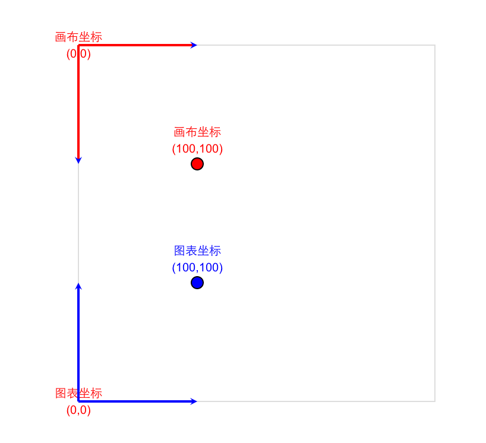

教程
坐标系简介
G2 中坐标系的功能是将经过度量后的数据（转换为 [0 - 1] 的范围的数据）转换到绘图控件（画布）上，从数据转换成画布上的图形主要经过以下 2 个步骤：
- 数据通过度量（scale) 转换到 [0 - 1] 的区间；
- [0 - 1] 区间内的度量值，通过坐标系 Coord 转换成画布上的坐标。
所以 G2 的坐标系只需要提供一下两者功能：
- 将 [ 0 - 1 ] 度量区上的数据转换成画布上的坐标；
- 把画布上的坐标还原到 [0 - 1] 区间内的数据。
坐标系的绘图范围
G2 的坐标跟画布本身的坐标的原点不一致，可以借助下面这张图来理解：

- G2 的坐标的起始点在左下角，画布的起始点在左上角；
- G2 的坐标系仅负责将 [0 - 1] 之间的数值映射到画布上；
坐标系的分类
在 G2 中通过 chart.coord([type]) 来设置坐标系，默认为直角坐标系。下表展示了 G2 支持的所有坐标系：
| 坐标系类型 | 说明 |
|---|---|
rect |
直角坐标系，由x, y两个垂直的维度构成 |
polar |
极坐标系，由角度和半径2个维度构成 |
plus |
一种特殊的极坐标系，原点不从圆心开始 |
theta |
一种半径固定的极坐标系，常用于饼图 |
map |
地理坐标系，支持不同类型的地理投影 |
坐标系的操作
所有的坐标系都支持以下操作，下述操作均支持链式调用。
chart.coord('rect').rotate(70).scale(1.5, 1.5).reflect('xy').transpose()rotate([angle]): 坐标系旋转；scale(sx, sy): 坐标系缩放；reflect(): 坐标系转置，将 x 或者 y 的起始、结束值倒置；transpose(): 将坐标系 x 轴和 y 轴转置。
下列分别展示了对坐标系做了 rotate(60)、scale、reflect、transpose 以及组合操作（scale rotate）的图表：
坐标系的配置信息
chart.coord('rect')
默认的坐标系类型，没有特别的配置，如果未声明 type，如 chart.coord() 默认也是 rect 直角坐标系。
chart.coord('plus', cfg)
chart.coord('plus', {
radius: 0.5,
inner: 0.6
});| cfg 可配置属性名 | 说明 |
|---|---|
| radius | 极坐标的半径，[0 - 1]的小数 |
| inner | 内部坐标系起始点的半径，[0 - 1]的小数，默认是0.5 |
chart.coord('polar', cfg)
chart.coord('polar', {
radius: 0.5,
inner: 0.6
});| cfg 可配置属性名 | 说明 |
|---|---|
| radius | 极坐标的半径，[0 - 1]的小数 |
| inner | 内部坐标系起始点的半径，[0 - 1]的小数,默认是 0 |
chart.coord('theta', cfg)
chart.coord('theta', {
radius: 0.5,
inner: 0.6
});| cfg 可配置属性名 | 说明 |
|---|---|
| radius | 极坐标的半径，[0 - 1]的小数 |
| inner | 内部坐标系起始点的半径，[0 - 1]的小数,可以构建空心的饼图 |
chart.coord('map', cfg)
chart.coord('map', {
projection: 'albers', // 指定投影方法
basic: [110, 0, 25, 47], // 指定投影方法的基本参数
max: [16.573, -13.613], // 指定投影后最大的坐标点
min: [-27.187, -49.739] // 指定投影后最小的坐标点
});注意： 不同的投影支持的配置参数不同，下面列出了目前 G2 支持的所有投影类别，并提供了绘制特定地图的示例，你只需要复制示例中的坐标系参数就可以绘制出在该投影坐标系下的地图。
- albers 投影
| cfg 可配置属性名 | 说明 |
|---|---|
| projection | 指定投影的类型 |
| basic | 指定投影方法的基本参数，[λ0, φ0, φ1, φ2] 分别表示中央经度、坐标起始纬度、第一标准纬度、第二标准纬度 |
| max | 指定投影后最大的坐标点 |
| min | 指定投影后最小的坐标点 |
- mercator 投影
| cfg 可配置属性名 | 说明 |
|---|---|
| projection | 指定投影的类型 |
| max | 指定投影后最大的坐标点 |
| min | 指定投影后最小的坐标点 |
【示例】mercator 投影后的世界地图。
更多
通过更改图表的坐标系，可以得到很多很有意思的图表，在下一章节里我们将要开始图表的辅助元素的学习：坐标轴、图例和tooltip。